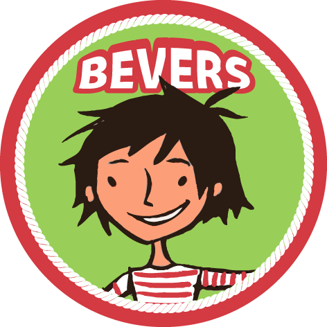
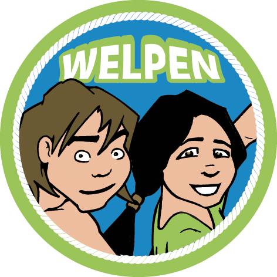
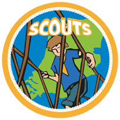
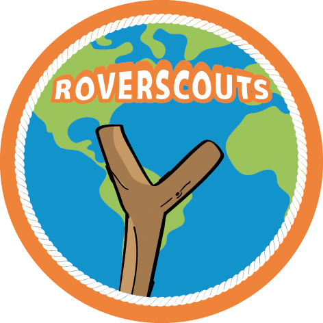

Ontdek de wereld van avontuur, vriendschap en zelfontplooiing bij onze scoutingvereniging. Bij Scouting de Landgraaf geloven we in de kracht van buiten zijn, samenwerken en nieuwe vaardigheden leren. Al meer dan 75 jaar bieden wij kinderen en jongeren de kans om zichzelf te ontwikkelen in een veilige, uitdagende en gezellige omgeving.
Wat is Scouting de Landgraaf
Scouting Avontuurlijk is een bloeiende scoutingvereniging in [plaatsnaam/regio]. Onze groep bestaat uit enthousiaste en betrokken vrijwilligers die zich inzetten om kinderen en jongeren tussen de [leeftijdsgroep] jaar een onvergetelijke tijd te bezorgen. Ons programma is gebaseerd op de scoutingwaarden: respect, samenwerking, zelfredzaamheid, en avontuur.
Onze activiteiten
Bij Scouting Avontuurlijk staat het buitenleven centraal. Elke week komen onze leden samen om spannende activiteiten te ondernemen in de natuur. Van het bouwen van een eigen kamp tot het leren van survivaltechnieken, van speurtochten tot gezellige kampvuren; er is voor ieder wat wils! Bovendien organiseren we regelmatig speciale evenementen en uitjes, zoals hikes, kampweekenden en internationale kampen, die de band tussen de leden versterken en voor onvergetelijke herinneringen zorgen.
Onze leeftijdsgroepen
Bij Scouting Avontuurlijk hebben we verschillende leeftijdsgroepen, zodat elk kind en elke jongere zich bij ons thuis kan voelen. Onze speltakken zijn ingedeeld op basis van leeftijd:
-

5 tot 7 jaar
gemengt
-

7 tot 11 jaar
gescheiden
-

11 tot 15 jaar
gescheiden
-
15 tot 18 jaar
gescheiden
-

18 tot 23 jaar
gemengt
Onze vrijwiligers
Onze scoutingvereniging draait volledig op de inzet van vrijwilligers. Stuk voor stuk zijn zij gepassioneerd en gemotiveerd om onze leden een fantastische tijd te bezorgen. Alle vrijwilligers hebben de benodigde trainingen gevolgd en beschikken over een Verklaring Omtrent Gedrag (VOG) om de veiligheid van onze leden te waarborgen.
lid wordem
Wil jij ook deel uitmaken van onze avontuurlijke scoutingfamilie? Kom dan gerust een keertje langs tijdens een van onze opkomsten en ervaar zelf wat scouting zo bijzonder maakt. Je bent van harte welkom om drie keer vrijblijvend mee te doen voordat je besluit lid te worden. Neem contact met ons op via quentinwanders@hotmail.nl om je aan te melden of voor meer informatie.